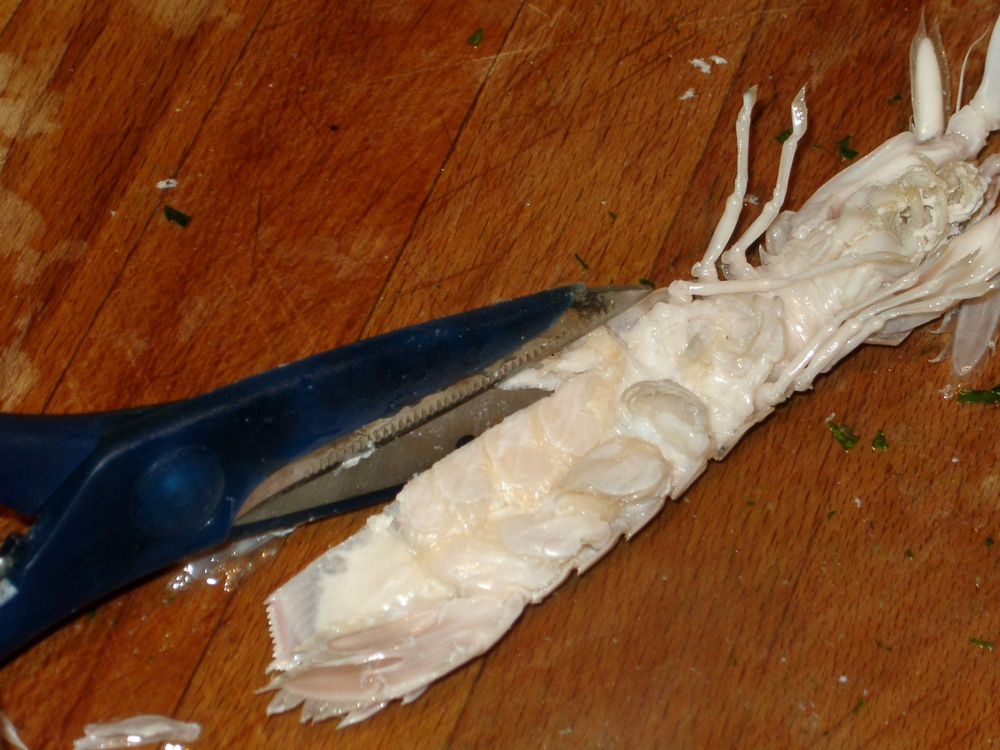
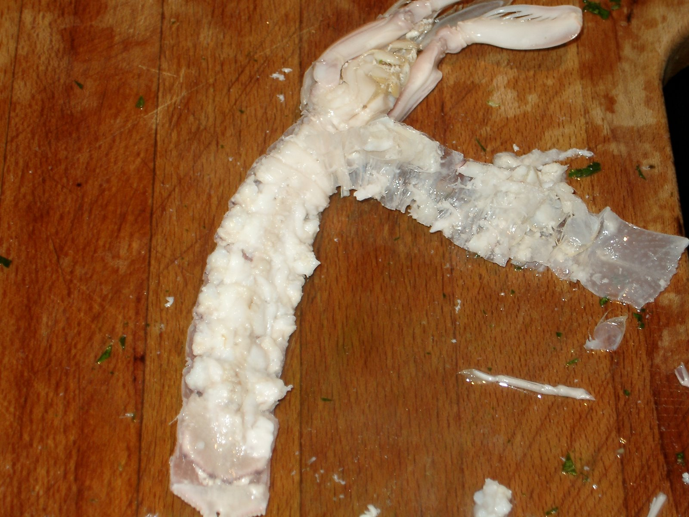

Antipasto di canocce
Introduzione e contesto

Piatto tipicamente della laguna veneziana.
Ingredienti
| Ingrediente | Quantità | Unità | Note |
|---|---|---|---|
| Canoccia | 5 | p.p. | |
| Sedano | 1 | gambo | |
| Insalata novella | |||
| Olio EVO | |||
| Sale | |||
| Pepe bianco | |||
| Limone | BIO |
Preparazione
Scelgo canocce (cicale di mare) vive e ben piene, cioè con la polpa consistente. La stagione migliore è quella invernale.
Le immergo in abbondante acqua bollente, aromatizzata con un mazzetto di prezzemolo e sedano. In alternativa, si possono cuocere a vapore.
Lascio cuocere per 5–6 minuti: devono diventare rossicce. Non prolungo la cottura, altrimenti tendono a svuotarsi.
Le raffreddo rapidamente in acqua fredda per fermare la cottura.
Passo quindi all’apertura, che sembra complessa ma non lo è.

Il taglio Taglio con forbici da cucina i bordi laterali, in corrispondenza delle articolazioni, per pochi millimetri, senza intaccare la polpa.
Sollevo poi delicatamente la parte inferiore del carapace partendo dalla coda, aiutandomi con le unghie, facendo attenzione a non lasciare attaccata la polpa.

Come togliere il sotto Preferisco questo metodo perché permette di servire le canocce con la parte superiore del carapace integra e ben colorata.
Dispongo un letto di insalatina novella e vi adagio sopra le canocce, inizialmente rovesciate.
Condisco con prezzemolo tritato, sale, pepe bianco e poco olio extravergine di oliva, preferibilmente delicato.
Rivolto quindi le canocce, in modo che non assorbano troppo il condimento ma lo cedano all’insalatina sottostante.
Guarnisco con limone.
Note e osservazioni
È una valutazione personale, ma le trovo superiori ad astici e aragoste: più delicate, più dolci, e con un carattere tutto loro.
{kind=link}